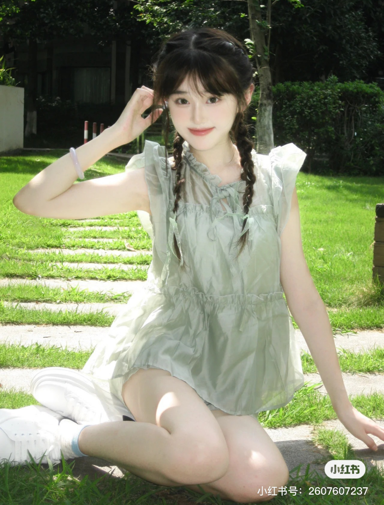

1. Nguyên tắc khi tạo dáng chụp ảnh dịu dàng
Điều quan trọng đầu tiên là bạn phải có một tạo hình phù hợp, những chiếc váy nhẹ nhàng, bồng bềnh, mái tóc nữ tính và lối make up nhẹ nhàng sẽ là lựa chọn lý tưởng nhất.
Không thể thiếu đi những phụ kiện đi kèm như cài tóc, vòng tay, khăn quàng hay túi xách.
Nếu bạn không thể tọa dáng khi đứng một mình thì với phong cách dịu dàng hãy chuẩn bị thêm hoa, sách... để bức hình trông sống động hơn nhé.
Hãy luôn cố gắng khiến cho thân hình của mình uyển chuyển hơn nhưng cũng phải thật tự nhiên để bức hình không bị cứng và trông thô trong mắt người khác.